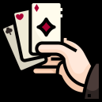

[The Front is responsible for selecting and determining the order of content-delivery.]
1. Live Feed
◆ Primary stream → hand selection
◆ Secondary stream →
◆ Sideline reporting →
2. Upload
◆ Uploaded content organized and recorded into Data sheet (USA)
◆ Producers need to double-check Data Sheet against transferred files (GGPro)
3. Data Sheet
I. All live feed content
II. All uploaded content (USA)
◆ Producer use Data Sheet to create the Cue Sheet
LIVE FEEDMONITORING
DATA SHEET
DATA TRANSFERFRONTCUE SHEETGRAPHICS
PROCESS : FRONT-END
[The Front is responsible for selecting and determining the order of content-delivery.]
4. Cue Sheet
◆ Producers determine order of content-delivery based on data sheet.
◆ The back-end process operates based on the directions provided in the cue sheet
5. Graphics
◆ Based on the cue sheet, the Graphics Producers select the appropriate graphic(s) and provide the relevant details to the Graphic Designers.
MONITORING
DATA SHEET
FRONTCUE SHEETGRAPHICSDESIGNBACK
PROCESS : BACK-END
[The Back is responsible for editing, designing, and transmitting all content.]
1. Design
◆ Graphics team inputs data into software based on cue sheet directives
◆ Lower-thirds, overlays, and branded elements
2. Edit
◆ Editors assemble content following cue sheet order
◆ Insert graphics, transitions, and audio
Note: Design and Edit work in parallel, synchronized via cue sheet.

FRONTSELECTED HANDS FROM FEED(S)
DRIVE
DESIGNCUE SHEETBACKEDITORSLASLAS
PROCESS : BACK-END
[The Back is responsible for editing, designing, and transmitting all content.]
3. Transmission
◆ Final edited content is transmitted to YouTube via AJA Bridgelive
◆ Producer manages transmission timing per cue sheet
4. Commentator
◆ Commentators deliver voice-over based on cue sheet talking points
◆ Commentary added 10~30 seconds prior to transmission
CUE SHEETEDITORS
TRANSMISSION
PRODUCER
CUE SHEET
COMMENTATORS
PROCESS : DATA MANAGEMENT
LIVE FEED
PRIMARY STREAM / 3 TABLE - PGM
SECONDARY STREAM / 1 TABLE - PGM
SIDELINE REPORTING
MORNING SHOW
UPLOAD
VIRTUAL TABLE
ORIGINAL CONTENT
HOT SEAT
PROMOTIONALS
INTERVIEW
SOFT CONTENT
PROCESS : DATA MANAGEMENT
1. Live Feed
◆ All live stream pgm feeds will be sent directly to GGProduction.
· Primary stream – 3 tables
· Secondary stream – 1 table
· Field reporting
2. Upload
◆ Data Managing Hub needed onsite to organize and facilitate the transfer of all media files to GGProduction
◆ Data Manager (LV) to coordinate with Data Manager (GGPro)
◆ Files to be transferred via cloud-based system
◆ Files to be organized via Data Managing sheet
LIVE FEED
F
FRONTDATA SHEETDATA TRANSFERFILE TRANSFER
C
CUE
PROCESS : DATA MANAGEMENT
1. Front-end receives Live Feed PGM directly
· Primary stream – 3 tables
· Secondary stream – 1 table
· Morning show
2. Data Manager receives Uploaded Content from LV → Organize, double-checks and Distributes accordingly.
◆ Content checklist → Front-end
· per content type
· operated by Content Producer and Data Manager
◆ Files → Back-end
LIVE FEED
F
FRONT
DS
DATA SHEET
E
EDITUPLOAD
DS
DATA SHEET
C
CUECUE SHEETLASLAS
PROCESS : DATA MANAGEMENT
FILE TRANSFER PROCESS
1. Upload data to the on-site LAS server
2. Leverage cloud servers for efficient data handling
3. Mirror the Korea LAS server to enhance
◆ Data upload stability
◆ Data upload speed
CLOUDLASLAS
PROCESS : COMMENTATOR
1. Producer uses the Production Cue Sheet to communicate cues and talking points to the commentators.
2. Commentators follow cues and talking points from cue sheet to deliver commentary over the final video output, typically 10~30 seconds prior to transmission.
3. The Producer communicates with the Commentator using the following methods
1. Based on the cue sheet, graphics team inputs and saves data (lower-third + alpha) into software.
· file saved under predetermined code/name
· file directly saved into editing program
2. In post, the editor will then fill in the remaining sections of the L-Bar and place the overlay in the correct order in the timeline as indicated in the cue sheet.
· each saved lower-third file corresponds to the same file name for predetermined content (ads + graphics) to be used in the remaining sections of the L-bar overlay.